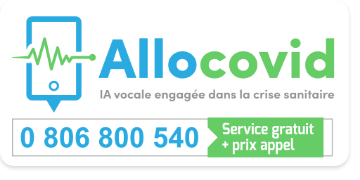
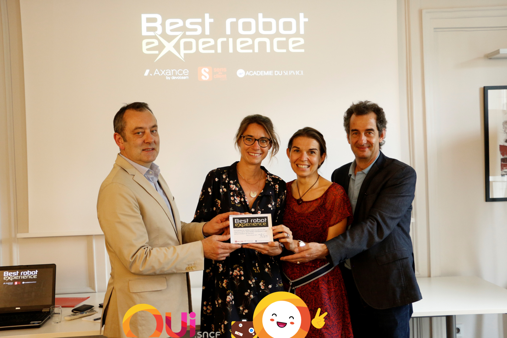
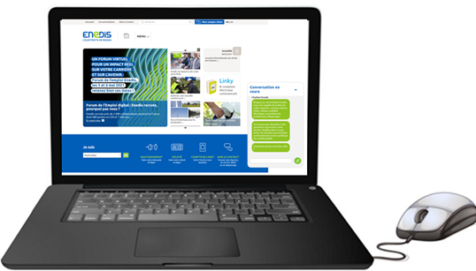
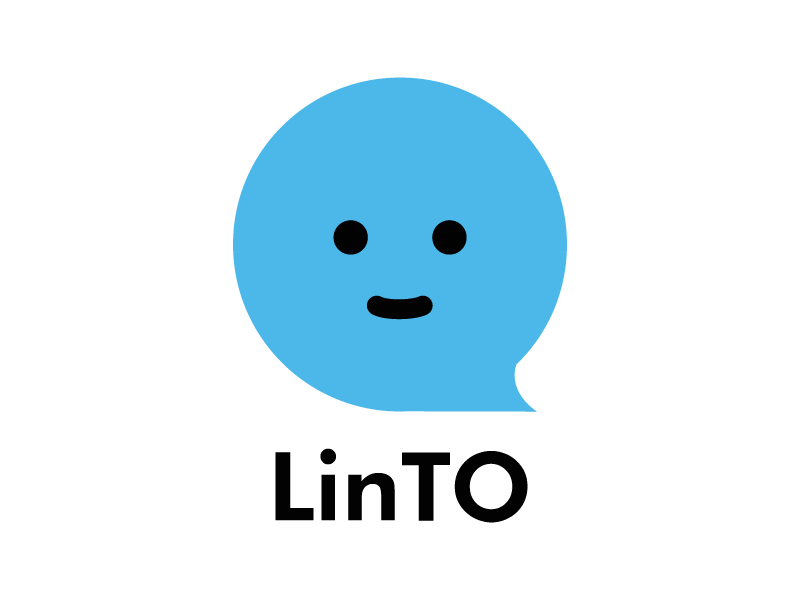
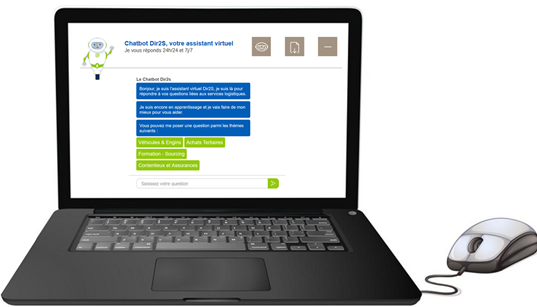
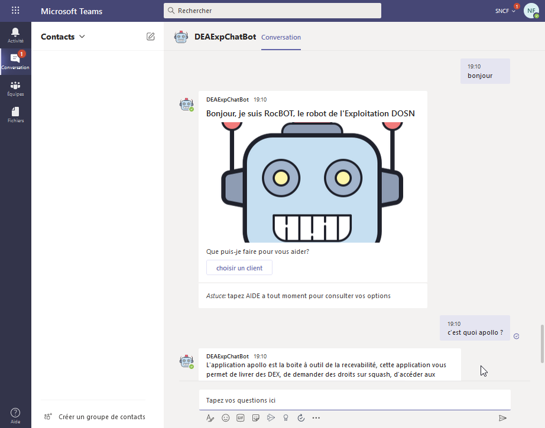
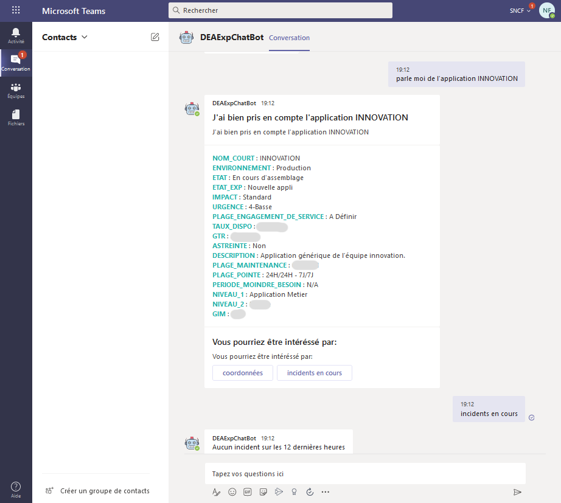
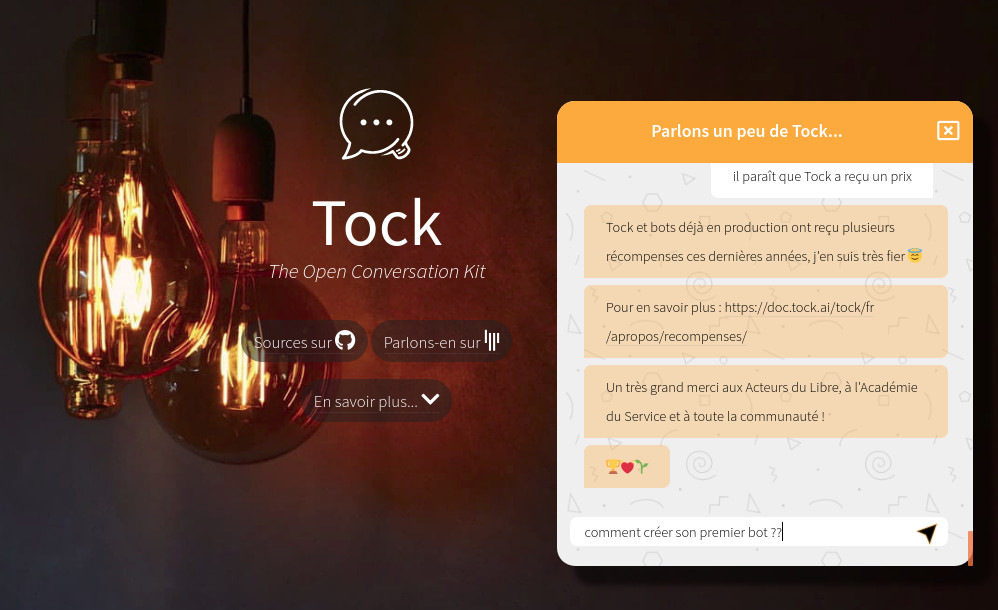

Vitrine utilisateurs
Depuis sa création pour OUI.sncf en 2016 en passant par le service AlloCovid en 2020, Tock est utilisé par de plus en plus d'équipes et d'organisations pour créer des bots conversationnels dédiés à des usages divers :
- domaines : santé, transport, énergie, e-commerce...
- business to customer et business to business
- FAQ et arbres de décision "0 code"
- assistance, selfcare ou bascule à un conseiller
- transactionnel (devis/réservations/paiements, help desks, supervision, etc.)
- canaux : texte & voix (Web & mobile, messageries, enceintes connectées, téléphonie)
Cette page présente différents assistants et produits connus construits avec Tock, dont certains ont été récompensés par la communauté.
Santé
AlloCovid
Le service AlloCovid permet d'informer et d'orienter la population sur le Covid-19, reprenant le questionnaire prédéfini par le Ministère de la Santé.
IA vocale engagée dans la crise sanitaire
Ce service conversationnel est le fruit de la collaboration de nombreux experts français, partenaires technologiques et bénévoles. Pour en savoir sur la génèse du projet, l'équipe et les partenaires, le fonctionnement du bot, la presse, etc. rendez-vous sur www.allocovid.com.
Disponible par téléphone, sur le Web et WhatsApp, AlloCovid est construit autour d'un bot Tock et intègre des solutions complémentaires comme les technologies vocales Allo-Media et Voxygen.
Le bot AlloCovid est construit autour de technologies open source (à travers la plateforme Tock),
et lui-même open source : les sources du bot sont disponibles sur le dépôt allocovid.
Avec les sources du bot on trouve également celles du connecteur Allo-Media, quelques explications techniques sur le bot et la spécification fonctionnelle du questionnaire Covid.

- Nom : AlloCovid
- Date de naissance : en production au printemps 2020
- Domaine : informations sanitaires et orientation vers les services de santé
- Canaux : texte & voix, par téléphone, sur WhatsApp et site Web
Transport & e-commerce
OUIbot, le bot OUI.sncf
OUIbot est l'assistant conversationnel de OUI.sncf. Disponible depuis 2016 sur le réseau social Facebook Messenger, OUIbot s'est construit avec les premières versions de Tock.
Avec OUIbot, réserver un billet de train n'a jamais été aussi simple ! Il vous assiste dans la préparation de vos voyages, permet d'effectuer rapidement et simplement une réservation complète, de la recherche à l'achat (paiement inclus), et vous accompagne durant votre voyage.
Grâce aux nombreux connecteurs Tock, OUIbot répond présent sur de nombreux canaux conversationnels : site www.oui.sncf, réseaux sociaux, assistants vocaux, enceintes connectées et même IAffiches avec JCDecaux.
En 2019, OUIbot accompagne près de 10 000 utilisateurs par jour. Il a été élu Best Robot Experience pour la deuxième année consécutive.

- Nom : OUIbot
- Date de naissance : en production depuis 2016
- Domaine : distribution, transactionnel (réservations, paiements), alertes & push notifications, relai vers un agent
- Canaux : texte & voix, sur le site Web entreprise, Messenger, WhatsApp, Business Chat (Messages), Google Assistant, Google Home, Alexa, IAffiches JCDecaux
L'Assistant SNCF
L'Assistant SNCF est l'application mobile des voyageurs SNCF sur Android et iOS, couvrant le train mais aussi d'autres modes de transport.
Avec l’Assistant SNCF, vous pouvez calculer votre itinéraire, rester informé en temps réel, acheter directement vos tickets de transport ou encore réserver votre course en VTC. En attendant de nouvelles fonctionnalités à venir.
Accessible via le "microphone" dans l'application mobile, le bot conversationnel de l'Assistant SNCF est construit avec Tock et les fonctions speech-to-text Android et iOS.
- Nom : L'Assistant SNCF
- Date de naissance : en production, fonction vocale Tock depuis 2019
- Domaine : voyage & transport (recherche itinéraires en multi-modal, etc.)
- Canaux : vocal, sur l'application mobile SNCF pour Android et iOS
Tilien, le chatbot Transilien
Tilien est le chatbot Transilien sur Messenger.
Conçu comme un compagnon de voyage personnel et amical, il informe des prochains départs, l'état du trafic, les travaux en cours et à venir, propose des itinéraires et bien d'autres choses (plans des lignes, fiches horaires, etc.) sur l'ensemble du réseau ferré Ile-De-France : Métro, RER, Transilien, Tram.
Motorisé par Tock, le chatbot vous attend sur Facebook Messenger pour offrir ses services.
- Nom : Tilien
- Date de naissance : en production, depuis 2018 sur Tock
- Domaine : transport & assistance (recherche itinéraires, plans des lignes, état du trafic, etc.)
- Canaux : texte, sur Messenger (botsncftransilien)
Mon Assistant TGV INOUI
Mon Assistant informe les clients et voyageurs de la marque TGV INOUI avant, pendant et après leur trajet.
Le chatbot est capable de donner l'état du trafic, le quai de départ d'un train, la ou les places du client, les services à bord (le bar, les prises électriques, etc.). Il permet aussi de parler avec un agent SNCF tout en restant dans la même conversation.
Présent sur la page Facebook TGV INOUI et le
portail Wifi à Bord, l'assistant
s'appuie sur Tock et le tock-react-kit.
- Nom : Mon Assistant TGV INOUI
- Date de naissance : en production depuis 2019
- Domaine : assistance & info voyageur (info quai, infos voyage en cours, services à bord), relai vers un agent
- Canaux : texte, sur le portail Wifi à Bord et Messenger (TGV INOUI)
L'Agent virtuel SNCF
L'Agent virtuel SNCF présente de manière conversationnelle l'information voyageur et les éventuelles perturbations sur tous les trains (TGV, IC, TER, Eurostar...).
On peut interroger le bot par numéro de train, dossier voyageur, prochains départs, etc. pour obtenir les dernières informations et l'état du trafic, ou encore parler à un Agent.
Accessible sur le site Web sncf.com, la page Facebook
et la page Twitter de la SNCF, l'Agent virtuel est basé sur Tock et utilise le tock-react-kit
pour l'intégration Web.

- Nom : Agent virtuel SNCF
- Date de naissance : en production depuis 2019
- Domaine : voyage & transport (état du trafic, travaux, prochains départs), relai vers un agent
- Canaux : texte, sur sncf.com (lien direct), Messenger (SNCFOFFICIEL) et Twitter (@sncf)
Energie
Callbot EDF
Sous la forme d'un POC (Proof Of Concept) pour éprouver un cas d'usage, un callbot a été conçu par la Direction des Systèmes d'Informations et du Numérique (DSIN) d'EDF Commerce.
Il a la particularité d'être conçu pour pouvoir fonctionner avec la solution de téléphonie (Genesys) afin de pouvoir router les appels clients vers la bonne compétence humarine ou automatisée.
Il permet par ailleurs de transférer le contexte de la conversation qu'il y a eu entre le client et le callbot auprès du conseiller clientèle.
Le callbot est construit avec Tock et utilise le connecteur Allo-Media. La solution de Speech-To-Text (STT) utilisée est Allo-Media, et la solution de Text-To-Speech (TTS) est Voxygen.

- Nom : Callbot EDF
- Date de naissance : janvier 2021
- Domaine : Relation Client / Conseiller
- Canaux : voix (téléphonie)
Chatbots Enedis
Plusieurs chatbots Enedis sont conçus avec la solution Tock.
Le Chatbot clients Enedis permet aux 35 millions de clients Enedis de poser des questions liées à l'énergie, sans nécessité de prendre contact avec un conseiller.
Cet agent conversationnel permet un premier niveau de prise en charge des sollicitations clients, adressant des questions simples et non personnalisées sur différentes thématiques (espace client, compteur Linky, demandes de raccordement, dépannage, etc.).
Il propose également un transfert vers un Live Chat où le client pourra échanger avec un conseiller en cas d’impossibilité du chatbot à répondre à la demande.
Co-construit avec des experts métiers Enedis sur la solution Tock, ce chatbot est disponible sur le site Enedis.fr.

- Nom : Chatbot clients Enedis
- Date de naissance : en production depuis février 2021
- Domaine : tous les métiers de l'énergie
- Canaux : texte, sur le site Enedis.fr
Voir aussi le Chatbot interne Enedis, également conçu avec Tock pour un usage interne à l'entreprise depuis 2020.
Banque
MaxBot, bot bancaire chez Aumax pour moi
Aumax pour moi est une application qui vous permet de regrouper tous vos comptes et toutes vos cartes dans un seul et même endroit. Vous facilitez votre quotidien en n'utilisant qu'une seule application et une unique carte. Pour vous accompagner au quotidien, Aumax pour moi vous permet :
- de gagner du cashback ;
- d'envoyer et recevoir de l'argent ;
- de faire appel à un service de conciergerie ;
- de demander des conseils d'ordres financiers, pour des projets de vie etc.
- et bien plus encore !

Au sein de cette application, le bot Aumax pour moi, basé sur Tock, vous assiste sur toutes les questions d'ordre pratique, sur le fonctionnement de l'application, de vos comptes et de la carte max.
Le bot est disponible sur le chat de l'application Aumax pour moi. Aumax pour moi prend en charge et répond à près de 5 000 sollicitations quotidiennes.
- Nom : Aumax pour moi
- Date de naissance : en production depuis 2019
- Domaine : bancaire, service, assistant personnel
- Canaux : texte, sur l'application mobile
Assistants personnels
LinTO by Linagora
La plateforme LinTO est une boîte à outils Open Source permettant le développement et l'intégration de processus d’interactions vocales répondant aux besoins des professionnels et de l’industrie.
LinTO est un assistant intelligent Open Source conçu par LINAGORA : basé exclusivement sur des technologies Open Source, LinTO est prêt pour le cloud mais sans GAFAM (Google-Amazon-Facebook-Apple-Microsoft), et respecte votre vie privée sans partager vos données pour usage commercial.
LinTO utilise l'IA pour capter votre voix et vous aider tout au long de la journée, même en réunion, à réduire les tâches stressantes ou chronophages : gestion d'agenda, rappels, prise de notes, emails, météo, trafic, dictionnaire , actualités, etc.
Le projet de recherche est subventionné par le PIA (Programme d'Investissement d'Avenir) de l'état Français dans le cadre des Grands Défis du numérique. Il allie des entreprises technologiques telles que LINAGORA et ZELROS et des laboratoires de recherche comme l'IRIT, le LaaS, le CNRS et le laboratoire de recherche en informatique de l'école polytechnique.
Le service LinTO NLU (Natural Language Understanding) est basé sur Tock et permet l’utilisation de plusieurs modèles IA dédiés à des cas d’utilisation spécifiques. Il apprend automatiquement selon les usages lors de l’ajout ou suppression de compétences (Skills) à la plateforme.
{style="width:200px;"}
- Nom : LinTO
- Date de naissance : en production avec Tock depuis 2019
- Domaine : assistant personnel pour les entreprises (agenda, emails, prise de notes, etc.)
- Canaux : vocal (portabilité Raspberry Pi, ARM, Android, Web...)
Bots internes
Chatbot interne Enedis
Le Chatbot interne Enedis permet aux 39 000 salariés Enedis un accès simplifié aux services logistiques de l’entreprise.
Cet agent conversationnel intelligent offre un support de 1er niveau en répondant aux questions les plus fréquentes des salariés et en orientant vers les outils Métiers de gestion de demande. Il a également vocation à mieux appréhender les besoins des salariés via l’analyse des questions fréquentes.
Construit avec Tock, le chatbot est disponible sur un site Web interne à l'entreprise.

- Nom : Chatbot interne Enedis
- Date de naissance : en production depuis 2020
- Domaine : services logistiques internes
- Canaux : texte, sur un site Web interne
Eve, un bot interne polyvalent (SNCF)
Eve est l'assistant interne des collaborateurs e.Voyageurs SNCF.
Le chatbot répond aux questions courantes, renvoie vers les bons contacts et outils collaboratifs de l'entreprise, automatise des demandes courantes au Support Informatique, Services Généraux, Direction Juridique, etc. Les équipes Devops peuvent aussi lui demander l'état de la production, les prochaines interventions, ou d'effectuer directement certaines opérations pour plus de simplicité et de réactivité.
Eve est à l'écoute des collaborateurs dans l'entreprise et en mobilité sur Teams avec Tock.
- Nom : Eve
- Date de naissance : en production depuis 2019
- Domaine : assistance en interne & B2B (FAQ, Support Informatique, RH, Juridique), automatisations DevOps (supervision, déploiements, gestion de production, etc.)
- Canaux : texte & voix, en interne dans l'entreprise et en mobilité via Teams
RocBOT, un assistant pour l'Exploitation (SNCF)
RocBOT est destiné aux Exploitants des équipes DEA SNCF. Il est à l'écoute en interne et en mobilité via Teams.
Le chabot aide les collaborateurs à trouver rapidement les informations utiles sur le parc applicatif. Il peut aussi vérifier si des incidents sont remontés par la supervision, donner l'agenda des astreintes, les bons contacts, etc.
RocBOT est en production depuis 2020, disponible sur desktop et en mobilité grâce au connecteur Teams fourni avec Tock.


- Nom : RocBOT
- Date de naissance : en production depuis 2020
- Domaine : exploitation et assistance en interne (FAQ, Support exploitabilité, relais ITSM, etc.)
- Canaux : texte & voix, en interne dans l'entreprise et en mobilité via Teams
Autres
Toki, le bot pour découvrir Tock
Toki s'adresse à tous ceux qui découvrent et utilisent Tock. Il répond à des questions courantes et apprend régulièrement notamment de la communauté Tock sur Gitter.
Comment créer votre premier bot ?
Comment installer Tock ?
Où trouver les sources, la licence ?...
N'hésitez pas à poser la question à Toki. S'il ne sait pas (encore) répondre, réessayez quelques jours après ;). Pour les anglophones, Toki arrive bientôt sur le site EN.
Le bot est construit entièrement "0 code" grâce à Tock Studio. Autant une démo qu'un outil pour la communauté, Toki est hébergé sur la plateforme démo publique, il utilise le connecteur Web et le kit React fournis avec Tock pour s'intégrer en quelques lignes de HTML/JS/CSS sur le site.

- Nom : Toki
- Date de naissance : en production depuis 2021
- Domaine : assistance à la communauté et FAQ
- Canaux : texte, sur le site Web de la solution
Et vous ?
D'autres assistants conversationnels développés avec Tock sont utilisés par différentes organisations (notamment les membres du TOSIT). Ces bots ne sont pas toujours destinés au grand public et leurs organisations ne communiquent pas nécessairement dessus. Nous mentionnons ces projets si l'occasion se présente ;)
N'hésitez pas à faire un tour sur le tchat Gitter de la communauté, vous pourrez constater que de plus en plus de professionnels et particuliers, étudiants, PME et ESN, expérimentent ou utilisent Tock pour leurs projets d'assistants ou d'applications NLP.
La plateforme est suffisamment générique pour permettre de nombreux usages et l'intégration de canaux internes ou externes. Si vous avez un doute sur les possibilités de Tock ou la faisabilité d'un nouveau projet, vous pouvez nous contacter pour en parler.
Quant à vos propres réalisations, n'hésitez pas à les partager ! 🙂